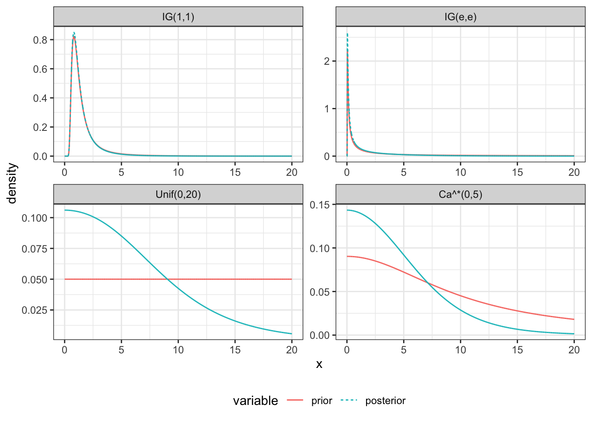

Chapter 6 Model Checking
Prior Sensitity Analysis
For the normal hierarchical model \[ y_i \stackrel{ind}{\sim} N(\theta_i, s_i^2) \quad \theta_i \stackrel{ind}{\sim}N(\mu, \tau^2) \] which results in the posterior distribution for \(\tau\) of \[ p(\tau \mid y) \propto p(\tau) V_{\mu}^{1 / 2} \prod_{i=1}^{\mathrm{I}}\left(s_{i}^{2}+\tau^{2}\right)^{-1 / 2} \exp \left(-\frac{\left(y_{i}-\hat{\mu}\right)^{2}}{2\left(s_{i}^{2}+\tau^{2}\right)}\right) \]
As an attempt to be non-informative, we can consider an \(IG(\epsilon, \epsilon)\) prior for \(\tau^2\) or \(\tau \sim U(0, C)\), \(\tau \sim Ca^+(0, C)\). \(C\) can be chosen relatively large for the particular problem.
library(tidyverse)
library(reshape2)
d = data.frame(y = c(28, 8, -3, 7, -1, 1, 18, 12),
s = c(15, 10, 16, 11, 9, 11, 10, 18))
t(d) %>% pander::pander()| y | 28 | 8 | -3 | 7 | -1 | 1 | 18 | 12 |
| s | 15 | 10 | 16 | 11 | 9 | 11 | 10 | 18 |
dinvgamma = function(x, a, b) dgamma(1/x,a,b)/x^2
dsqrtinvgamma = function(x, a, b) dinvgamma(x^2, a, b)*2*x
tau_log_posterior = function(tau, y, si2)
{
spt = si2+tau^2
Vmu = 1/sum(1/spt)
mu = sum(y/spt)*Vmu
0.5*log(Vmu)+sum(-0.5*log(spt)-(y-mu)^2/(2*spt))
}
V_tau_log_posterior = Vectorize(tau_log_posterior,"tau")
h = 0.001
e = 0.001
df = data.frame(x = seq(0,20-h, by=h)+h/2) %>%
dplyr::mutate(log_like = V_tau_log_posterior(x, d$y, d$s^2),
'IG(1,1)' = log(dsqrtinvgamma(x,1,1)),
'IG(e,e)' = log(dsqrtinvgamma(x,e,e)),
'Unif(0,20)' = 0,
'Ca^*(0,5)' = dcauchy(x, 0, 10, log=TRUE)) %>%
melt(id.var=c('x','log_like'),
variable.name = 'Distribution',
value.name = 'log_prior') %>%
dplyr::mutate(log_posterior = log_like + log_prior) %>%
group_by(Distribution) %>%
dplyr::mutate(prior = exp(log_prior-max(log_prior)),
prior = prior/sum(prior)/h,
posterior = exp(log_posterior-max(log_posterior)),
posterior = posterior/sum(posterior)/h) %>%
melt(measure.vars = c('prior','posterior'),
value.name = 'density')
ggplot(df, aes(x, density, color=variable, linetype=variable, group=variable)) +
geom_line() +
facet_wrap(~Distribution, scales='free') +
theme_bw() +
theme(legend.position="bottom")
Posterior Predictive Checks
Let \(y^{rep}\) be a replication of \(y\), then \[ p(y^{rep}|y) = \int p(y^{rep}|\theta,y) p(\theta|y) d\theta = \int p(y^{rep}|\theta) p(\theta|y) d\theta. \] where \(y\) is the observed data and \(\theta\) are the model parameters.
To simulate a full replication:
- Simulate \(\theta^{(j)} \sim p(\theta\mid y)\) and
- Simulate \(y^{rep,j} \sim p(y\mid \theta^{(j)})\)
To assess model adequacy:
- Compare plots of replicated data to the observed data.
- Calculate posterior predictive p-values.
- Define a test statistic \(T(y, \theta)\)
- Define the posterior predictive p-value: \(p_B = P(T(y^{rep}, \theta)) \geq T(y, \theta) \mid y)\)
- Small or large p-values are (possible) cause for concern